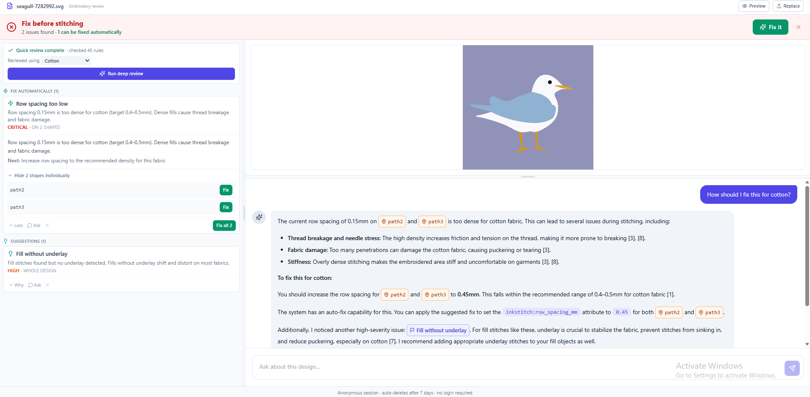

One-click AI review for your embroidery design.
One command in Inkscape opens a preview, embroidery preflight findings, and a chat about your design — right in your browser.
No account, no API key — just Inkscape 1.0+.

How it works
From your Inkscape canvas to a finished review, in four steps.
-
Open or draw your design
Work on your embroidery design in Inkscape as usual.
-
Run the menu command
Extensions → StitchBase → Open in StitchBase— nothing else to fill in. -
Your browser opens automatically
Your design uploads and the review opens at the StitchBase review page, no copy-pasting links.
-
Review findings and chat
See the preview, the preflight findings, and chat about your design right away.
Install in under a minute
Download once, then run the installer for your operating system.
Watch the installer run end to end, then follow the steps for your OS below.
- Download and unzip
StitchBase.zip. - Double-click
Install-Windows.bat. - When you see "Installation successful!", restart Inkscape.
Manual install (only if the installer didn't work)
Copy both files into your Inkscape user extensions folder, then restart Inkscape.
| Folder | %APPDATA%\inkscape\extensions |
|---|---|
| Files | send_to_ai.py, send_to_ai.inx |
- Download and unzip
StitchBase.zip. - Double-click
Install-Mac.command. - When you see "Installation successful!", restart Inkscape.
sh Install-Mac.command.
Manual install (only if the installer didn't work)
Copy both files into your Inkscape user extensions folder, then restart Inkscape.
| Folder | ~/Library/Application Support/org.inkscape.Inkscape/config/inkscape/extensions(older Inkscape: ~/.config/inkscape/extensions) |
|---|---|
| Files | send_to_ai.py, send_to_ai.inx |
- Download and unzip
StitchBase.zip. - In a terminal, run
sh Install-Linux.sh. - When you see "Installation successful!", restart Inkscape.
Manual install (only if the installer didn't work)
Copy both files into your Inkscape user extensions folder, then restart Inkscape.
| Folder | ~/.config/inkscape/extensions |
|---|---|
| Files | send_to_ai.py, send_to_ai.inx |
- Inkscape 1.0 or newer
- An internet connection
- Windows, macOS, or Linux
Built for embroidery, not just vector art
Every check is about getting your design ready to stitch.
One click, no setup
One menu command. No URLs, no API keys, no settings.
Instant preflight findings
Stitch density, underlay and pull compensation — checked before you digitize.
AI chat about your design
Ask why a finding matters and how to fix it.
Resumable sessions
Re-run on the same file to pick up the same chat.
Frequently asked questions
Do I need an account?
No. There's no account, no setup, and no settings to configure — just install and use it.
What data gets sent, and when?
Only your SVG file's content and filename, and only at the moment you click "Open in StitchBase". There's no background or idle telemetry.
Does it remember my previous chat?
Yes — re-running it on the same saved file resumes the same chat session for that design.
My browser didn't open. What do I do?
Copy the link shown in the Inkscape message dialog and paste it into your browser.
Windows says the installer is unrecognized. Is that normal?
Yes — this is Windows SmartScreen warning about a new, unsigned script. Click "More info", then "Run anyway".
macOS won't let me open the installer. What now?
Right-click the installer, choose "Open", then confirm "Open" again.
You can also run it from Terminal with sh Install-Mac.command.
The menu item is missing after I installed it.
Make sure both send_to_ai.py and send_to_ai.inx
are in your Inkscape extensions folder, and that you fully restarted
Inkscape (not just closed and reopened a document window).
Is it free and open source?
Yes. StitchBase is released under the MIT license.
Ready to try it?
Download the extension, run the installer for your OS, and you're set.
Download StitchBase